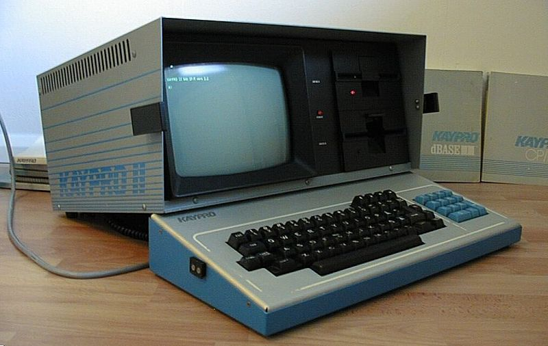

El motivo
El mundo no se está acabando, pero algo ha cambiado: la IA y los robots ya están aquí y debemos aprender a indicarles qué hacer. Una cuenta de ChatGPT Business cuesta solo 25 dólares por empleado al mes y puede aumentar mucho la productividad. Un robot humanoide se venderá por menos del costo anual de un trabajador que gana 15 dólares por hora (unos 31,200 dólares antes de impuestos y prestaciones del empleador), por lo que puede parecer mucho más económico. Además, Nuevo México tiene solo 16 habitantes por milla cuadrada, lo que dificulta las finanzas estatales. Estas realidades me preocupan por el futuro de mi estado adoptivo y de Las Cruces, una ciudad cuya gente me ha recibido con mucho cariño.
La imagen de la izquierda muestra mi primera computadora, que compré a los 23 años, en 1983. Era una portátil «prehistórica» de Kaypro, conocida como luggable, con un asa debajo del teclado. Tenía una pantalla pequeña de texto verde, dos unidades de disquete de 360 KB y un megabyte COMPLETO de memoria RAM. Tener aquella máquina me convirtió en un aficionado a la informática de por vida. Pasé muchos años trabajando en tecnología y áreas relacionadas en Seattle a mediados de los ochenta, viajando por negocios a Hong Kong y China, y manteniendo relaciones con proveedores de India y Europa. Por casualidad de nacimiento tengo un coeficiente intelectual superior al promedio: no soy un genio, pero sí despierto. Creé un negocio y seguí aprendiendo mientras cambiaba la tecnología. Ahora estoy jubilado.
Mi motivación para este trabajo nació al entrar al monasterio budista tibetano Sakya de Seattle hace más de veinticinco años (sakya.org). Al tomar mis votos me comprometí a no hacer daño y a aliviar el sufrimiento cuando pudiera. No soy monje, sino un practicante laico bastante perezoso, pero mi compromiso es sincero. Pequeños momentos, como conocer a alguien vinculado con la película Little Buddha, forman parte de mi relación con esa comunidad.